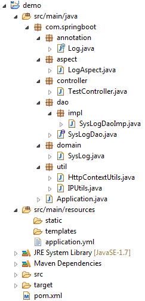

在Spring框架中，使用AOP配合自定义注解可以方便的实现用户操作的监控。首先搭建一个基本的Spring Boot Web环境开启Spring Boot，然后引入必要依赖：
自定义注解
定义一个方法级别的@Log注解，用于标注需要监控的方法：
创建库表和实体
在数据库中创建一张sys_log表，用于保存用户的操作日志，数据库采用oracle 11g：
库表对应的实体：
保存日志的方法
为了方便，这里直接使用Spring JdbcTemplate来操作数据库。定义一个SysLogDao接口，包含一个保存操作日志的抽象方法：
其实现方法：
切面和切点
定义一个LogAspect类，使用@Aspect标注让其成为一个切面，切点为使用@Log注解标注的方法，使用@Around环绕通知：
测试
TestController：
最终项目目录如下图所示：

启动项目，分别访问：
查询数据库：